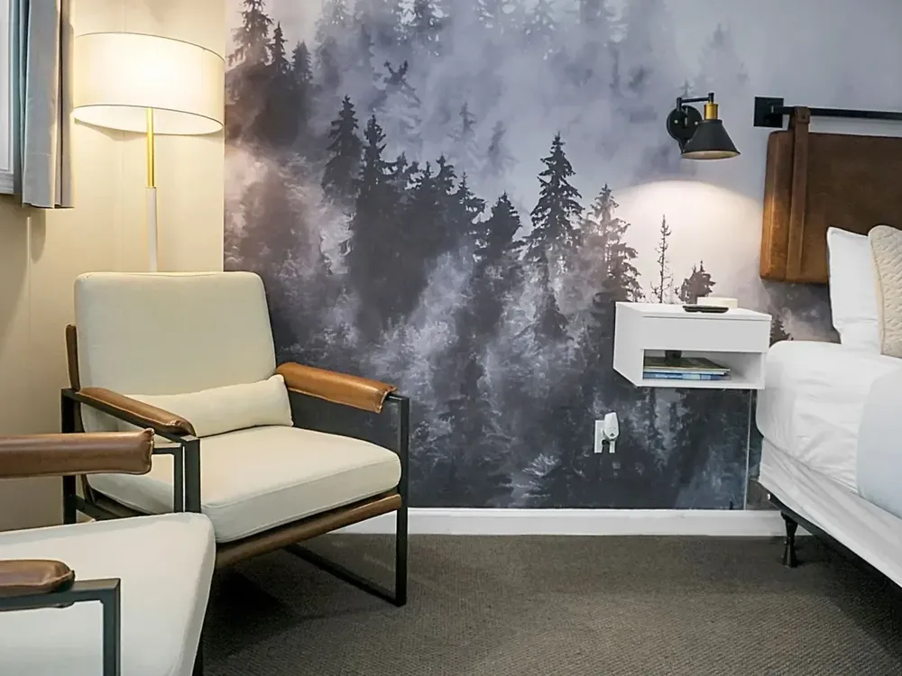

About CoastalOS
Built by hotel owners, for hotel owners.
CoastalOS is a technology-enabled hotel management and operating platform for independent and boutique hotels. It takes on the work every hotel repeats, such as pricing, reservations, payroll and reporting, and runs it centrally, so owners keep their independence with the support of a larger operation.
Three ways to run an independent hotel
- Software vendorGives you tools.Useful technology, but you and your team still run reservations, pricing, staffing and reporting yourselves.
- Traditional management companyRuns the hotel its own way.The day-to-day is handled for you, on the management company’s own terms and approach.
- CoastalOSAn operator-built platform.Runs the core functions of your hotel centrally, while your brand, your guests and your independence stay yours.

Our origin
Developed inside real hotels, not a software lab.
CoastalOS is built by the team behind Coastal Hospitality Group. Founder and CEO Jed Tarr started the company in 2012 with a small beach motel in San Clemente, California. As of 2026, Coastal Hospitality Group has owned and operated 14 hotels, today in North Carolina, Florida and California.
Running those properties every day shaped how the platform works: the work that repeats at every property is run centrally, and the hospitality itself stays with the people on site. Coastal Management Company, the group’s operating company, reports that it often lifts a hotel’s bottom line by 10 to 30 percent within its first year of operating it. See how the platform works.
Who we work with
Owners and operators who want the systems of a larger operation while keeping their independence, their brand and their guests.
- Independent hotels
- Boutique hotels
- Motels
- Inns
- Resorts

The founder
“We built CoastalOS around the work we know firsthand: running independent hotels. Our goal is to give owners dependable operational support while preserving what makes each property their own.”
Jed Tarr launched Coastal Hospitality Group in 2012, at 27, with a small beach motel in San Clemente. Before that he worked in real estate development in Phoenix and Los Angeles. He has been a member of the Urban Land Institute since 2006 and studied business and economics at Arizona State University.
Request a property review
Let’s talk about your hotel.
Tell us about your property and what you want to improve. We’ll start with a review or a conversation, whichever suits you.